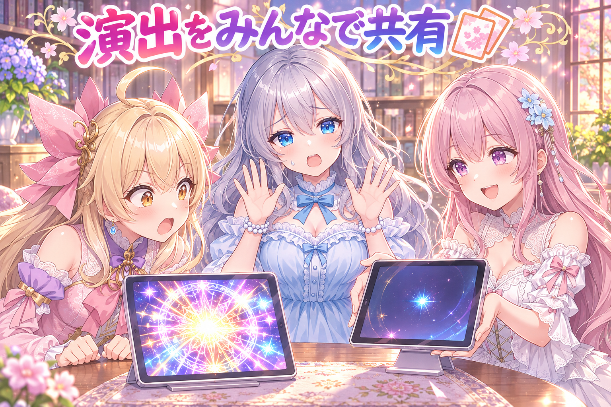
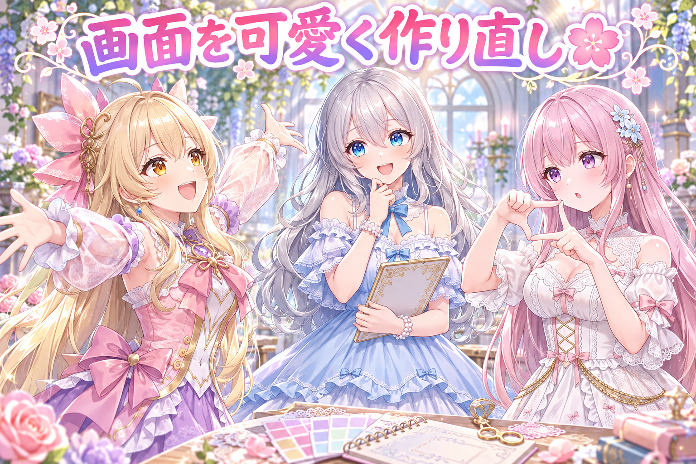
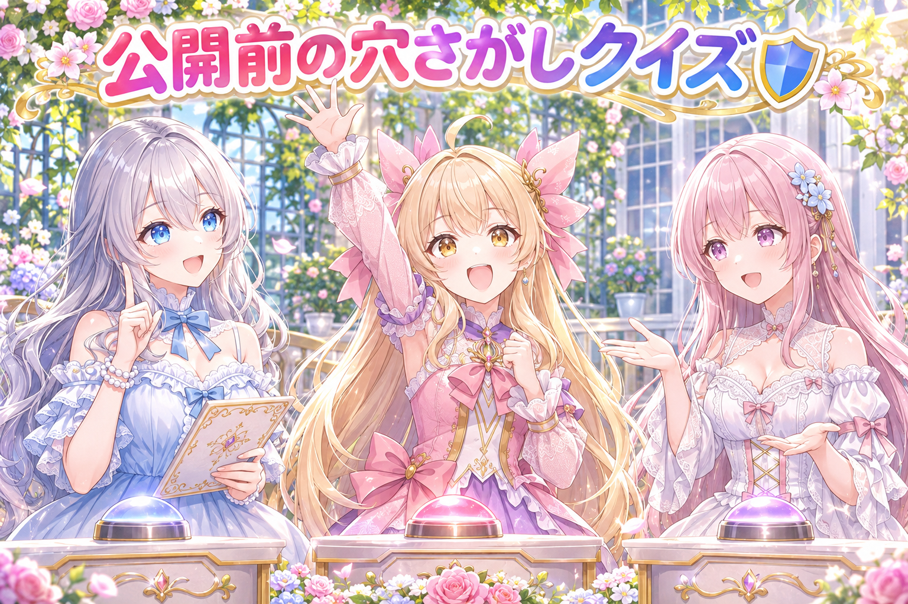
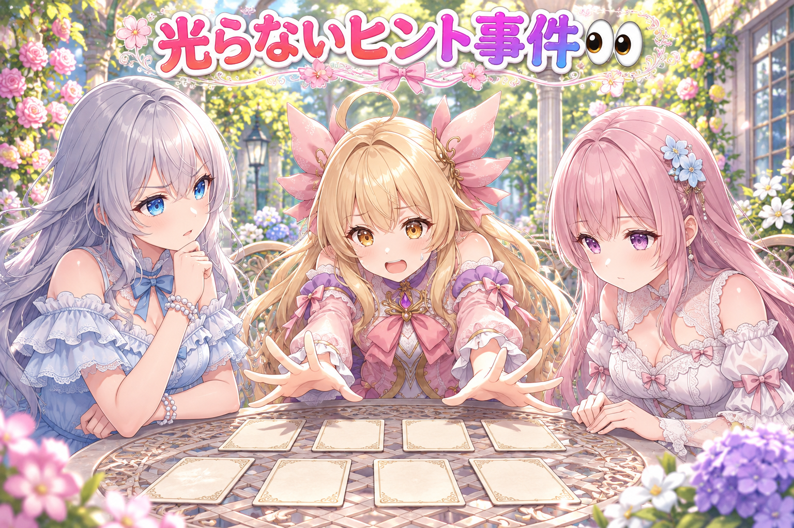
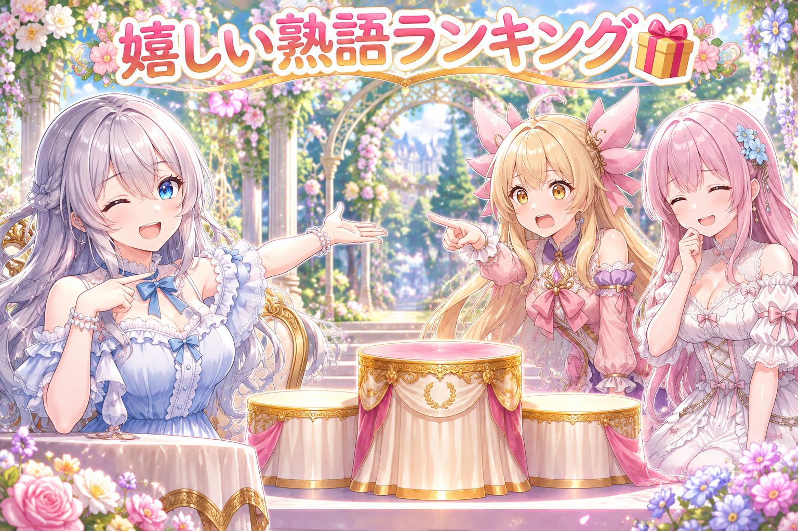

📌 3行まとめ
- オンラインで一緒に遊ぶとき、全員に同じ演出が見えるようにしたいという方針を立てた
- 一般公開の前に、悪意ある利用者の立場から穴を探すチェックを行い、見つかった穴を直して再チェックした
- 実際に遊んでみて、ヒントが光らない・名前が反映されないなどの不具合と、点数や設定まわりの改善点をまとめて洗い出した

ルピナス （笑顔）
はーい、今夜もAIBSの時間です。常連リスナーさん、こたつの準備はできてる？

アイリス （大笑い）
お姉ちゃん！前回はさ、漢字の神経衰弱の遊び方を決めて、試作がやっと動いたとこだったよね！パソコンが勝手に再起動したやつも！

フィオナ （ふつう）
はい、今日はその続きです。動き始めたゲームを、人に遊んでもらえる形に近づけていく一日でした。

ルピナス （ウインク）
というわけで今日は、公開前の総点検回。笑えるやらかしもちゃんとあるから、最後まで付き合ってね。
1. 🎴 みんなに同じ演出を見せたい

このゲームは、離れた人とオンラインでも遊べます。ところが、札がそろったときの演出や三姉妹の反応が、人によって違うものになりうる作りでした。一緒に通話しながら遊んでいると、片方は派手なお祝い、もう片方は控えめ……という食い違いが起きて、会話がかみ合わなくなります。そこで朝いちばんに、三姉妹の演出も含めて『全員に共通の演出』にそろえる方針を立てました。

ルピナス （ふつう）
じゃあ今日はコント仕立てでいくね。設定は、オンラインで対戦中のアイリスとフィオナ。はい、スタート。

アイリス （笑顔）
やったー！ペアそろった！見て見て、画面いっぱいに花火！あたしのために打ち上がってる！

フィオナ （考え中）
……アイリスちゃん、こちらの画面では、お姉ちゃんが小さく拍手しているだけですよ？

アイリス （衝撃）
えっ、温度差すご！あたしだけお祭りで、フィオナの方は町内会の拍手！？

フィオナ （大笑い）
しかもわたしの画面のお姉ちゃん、なぜか眠そうな顔をしています。

ルピナス （呆れ）
ちょっと、私が二人いて片方だけ寝てるの？それは困るわ。はい、カット！
ルピナス （ふつう）
これが実際に起こりうる問題なの。演出をそれぞれの端末で勝手に選ぶと、同じ場面なのに見えてる物が違っちゃう。
フィオナ （ふつう）
ですので、どの演出を出すかは部屋の側で一度だけ決めて、全員に同じ内容を届ける考え方にそろえる、という方針になりました。

アイリス （考え中）
じゃあ花火はみんなで見られるってこと？……あ、でもそれだとフィオナにもあたしの花火が見えちゃうじゃん。

フィオナ （ドヤ顔）
はい。アイリスちゃんの花火も、わたしの花火も、平等に。

アイリス （怒り）
独り占めできない！……でもまあ、一緒に見る方が楽しいか。

ルピナス （大笑い）
それが言えたなら成長ね。あと私が寝てる演出は全員共通でも出しません。
📝 ポイント（初心者向け解説・技術メモ・まとめ）
- 初心者向け解説：みんなで同じテレビ番組を見ているのに、家ごとに違う場面が流れていたら話が合わないよね。オンラインのゲームも、全員に同じ場面を見せるのが大事なんだ📺
- 技術メモ：多人数オンラインでランダムな演出を出すときは、各クライアントで乱数を引かず、部屋（サーバー）側で抽選した結果や seed を全員にブロードキャストする設計が定石。乱数を共有しておけば、遅れて参加した人にも同じ流れを再現しやすい。
- ひとことまとめ：通話しながら遊ぶゲームは『同じものが見えている』ことが楽しさの土台。
2. 🌸 「可愛い＋綺麗」な画面への作り直し

タイトル兼設定の画面・ゲーム中の画面・結果の画面が、背景の上に白いボタンが並ぶだけになっていて、ルピナスから『可愛い＋綺麗＋三姉妹の画面になっていない、パターンも色々ほしい』と指摘が入りました。条件は、新しい絵は描き足さず、手持ちの立ち絵（表情とポーズ）と場面ごとの背景、そして画面の動きだけで勝負すること。スマホの縦持ちとパソコンの横長、どちらでもスクロールなしで1画面に収めるという縛りもあります。手持ちの素材で見栄えを上げるやり方を考え直すところから作業を進めました。
ルピナス （笑顔）
ここは討論でいこうか。お題は『新しい絵なしで、画面を可愛くするには何が一番効く？』
アイリス （笑顔）
はい！あたしたちを画面いっぱいに！ドーンと大きく出す！主役なんだから！
フィオナ （考え中）
大きく出すのは賛成ですが、ボタンや札が隠れたら遊べません。わたしは、並べ方と余白をきちんと整えるのが先だと思います。

アイリス （呆れ）
えー、余白って地味じゃん！可愛さは勢いだよ！
フィオナ （ふつう）
地味ですけど、綺麗に見える画面は、だいたい余白がおしゃれなんです。
ルピナス （ふつう）
どっちも一理あるよね。キャラが主役なのも、遊びやすさが大事なのも本当。
アイリス （考え中）
じゃあさ、あたしたちがボタンの横で、ちょこっと動いてたら？札がそろったらポーズ変えるとか！

フィオナ （びっくり）
……それは良いですね。絵は増やさなくても、表情とポーズの組み合わせなら、手持ちだけでたくさん作れます。

アイリス （ドヤ顔）
でしょ？あたし今日ちょっと冴えてる！
ルピナス （大笑い）
裁定。今日の討論はアイリスの勝ち。……ただし画面いっぱいドーン案は、札が全部隠れるので却下ね。
📝 ポイント（初心者向け解説・技術メモ・まとめ）
- 初心者向け解説：お部屋の模様替えで、新しい家具を買わなくても、置き方と照明を変えるだけでぐっとおしゃれになることってあるよね。画面づくりも同じなんだ🛋️
- 技術メモ：素材を増やせない制約下では、立ち絵の表情差分×ポーズ差分の組み合わせ、背景のぼかしや色かぶせ、CSS アニメーション（ふわっと揺らす・登場時のスライド）で印象を変えるのが有効。縦横両対応は dvh や clamp() で要素サイズを可変にすると1画面に収めやすい。
- ひとことまとめ：絵を描き足せなくても、組み合わせと動きで画面はまだまだ化ける。
3. 🛡️ 公開前に「意地悪な目」で穴さがし

登録なしで誰でも遊べるゲームを一般公開するということは、悪いことを考える人もやってこられるということです。そこで公開前に、悪意ある利用者・悪意ある別サイト・大量アクセスの立場になりきって、本当に突ける穴を探すチェックを行いました。合格の条件は『深刻度が高い穴が0件』。1回目で、高い穴が1件、中くらいと軽い穴が合わせて十数件見つかったので、それを直してから2回目のチェックに回しました。
ルピナス （ふつう）
ここはクイズ形式。第1問。悪い人が、自分の回線を何個にも見せかけて回数制限をすり抜けようとしました。どう防ぐ？
アイリス （笑顔）
はい！その人の家に行って、パソコンの電源を抜く！
ルピナス （呆れ）
物理で解決しないの。住所も知らないでしょ。
フィオナ （ふつう）
正解は、細かく分かれた番号をある程度のまとまりで数えることです。新しい方式の番号は、一つの家庭にとてもたくさん配られることがあるので、一つずつ数えると、別人のふりがし放題になってしまうんです。
アイリス （びっくり）
えっ、一軒にいっぱい番号あるの？表札が百枚ある家みたい！
フィオナ （大笑い）
ちょうどそんな感じです。なので、表札ではなく家ごと数えるようにしました。
ルピナス （ふつう）
第2問。誰かがものすごい数の偽の名前で押しかけてきて、数えるための表がパンパンになりました。どうする？
アイリス （考え中）
うーん……表を大きくする！もっと大きく！宇宙くらい！
フィオナ （ふつう）
それだと、いつか置き場所が足りなくなってしまいます。古い記録は時間で掃除して、それでも満杯なら新しい人は一旦お断りする、という作りにしました。
アイリス （呆れ）
宇宙案、二問連続で却下された……。
ルピナス （笑顔）
あと、ロボットの自動アクセスを見分ける確認を、本番では必ず通す設定にもしたよね。
アイリス （ドヤ顔）
ふっふっふ、ここまで聞いたら、あたしも悪い人の気持ちが分かってきた！今なら穴を見つけられる気がする！
フィオナ （ウインク）
では、アイリスちゃんには次から見つける係をお願いしますね。電源を抜く以外の方法で。
📝 ポイント（初心者向け解説・技術メモ・まとめ）
- 初心者向け解説：お店を開く前に、わざと泥棒のつもりで裏口や窓の鍵を全部確かめるようなもの。自分が作った物ほど、自分では穴に気づきにくいんだ🔑
- 技術メモ：レート制限を IP 単位でかけるとき、IPv6 は1契約に巨大な範囲が割り当てられるため、/56 や /64 などのプレフィックス単位に丸めて数えないと簡単に回避される。カウント用の表は時間で掃除し、上限到達時は新規キーを拒否する（メモリ枯渇対策）。公開エンドポイントには Cloudflare Turnstile のようなボット判定を本番必須にしておく。
- ひとことまとめ：公開前の『意地悪チェック』は、深刻な穴が0件になるまで直して再チェックが基本。
4. 👀 今日のやらかし

夕方、ルピナスが実際に遊んで、点数や持ち時間を決めるテストをしました。ところが遊んでみると、困った所がぞろぞろ。ヒント機能をオンにしても札が光らない、そもそもヒントの有無を設定できない、部屋を立てるときに入力した名前が反映されず、勝手に選択肢の名前に変わってしまう……。自分で遊んでみて初めて分かる不具合と改善点を、一気に洗い出しました。
アイリス （笑顔）
じゃーん、実況いきまーす！お姉ちゃんがヒントをオンにしました！さあ札が……光り……光り……
アイリス （あわあわ）
光らなーい！ヒントさん、出番だよ！寝てる場合じゃないよ！

ルピナス （考え中）
しかもね、わたしが言ったのが鋭くて。最初から光っても意味がないんじゃないかって。
フィオナ （考え中）
確かに……最初の時点では、どの札にもペアの相手があるはずなので、光っても手がかりになりませんね。
ルピナス （ふつう）
そう。だから1枚めくった後に、その相手になれる札が光る方が自然、っていう提案が出たの。
アイリス （びっくり）
なるほど！光らない事件のおかげで、もっといい光り方が見つかった！むしろ光らなくてよかった！
ルピナス （呆れ）
そこを手柄みたいに言わないの。で、次。名前の件。

フィオナ （照れ）
部屋を立てるときに名前を入れても、勝手に用意された名前に変わってしまう……。わたし、自分で決めた名前がなくなるのは少し悲しいです。
アイリス （怒り）
ひどい！あたしが『最強アイリス』って入れたら、勝手に『プレイヤー』とかにされるってこと！？
ルピナス （大笑い）
それはむしろ守られてる気がするけど……部屋に入る側も同じことが起きてないか、確かめる宿題になったわ。
フィオナ （ふつう）
ほかにも、珍しい熟語の点数をばらばらにせず全部同じ点にそろえる、曲や背景や画面の種類は最初からランダムにする、部屋を立てるメニューと入るメニューを分ける、という改善点も出ました。
アイリス （笑顔）
あと名前とか曲の設定を、次に開いたときも覚えててほしいって！毎回入れ直すの面倒だもん！
ルピナス （笑顔）
そうそう。それにタイトル画面で放っておいたら、私たちがそれぞれ動いたりおしゃべりしたりしてほしい、って案も。
アイリス （ドヤ顔）
待ってる間もあたしたちが楽しませるってことだね！……で、ヒントは結局いつ光るの？
フィオナ （大笑い）
今のところは、まだ光りません。
📝 ポイント（初心者向け解説・技術メモ・まとめ）
- 初心者向け解説：お料理も、味見してみて初めて『塩が足りない』って分かるよね。ゲームも自分で遊んでみると、作っている時には見えなかった所が山ほど見つかるんだ🍳
- 技術メモ：神経衰弱のヒントは、初手から全札を光らせても情報量がゼロ（全札にペアが存在する）。1枚目を選んだ後に候補だけを光らせると意味のある手がかりになる。名前や曲などの設定の記憶は、ブラウザの localStorage に保存しておけばスマホでもパソコンでも次回起動時に復元できる。
- ひとことまとめ：実際に遊ぶテストは、不具合探しと遊びの設計の見直しを同時にやってくれる。
5. 🎁 お楽しみコーナー：引いたら嬉しい熟語格付けランキング

漢字の神経衰弱にちなんで、今日は『札をめくってこの熟語ができたら嬉しい！』を三姉妹で格付け。順位をめぐって、なぜか揉めました。
ルピナス （笑顔）
じゃあ一人ずつ推し熟語を出して、最後に順位を決めます。アイリスから。
アイリス （笑顔）
『満腹』！見ただけでお腹いっぱいになるから、ゲーム中のおやつ代わり！
フィオナ （考え中）
わたしは『木漏日』……と言いたいところですが、三文字なので札二枚では作れませんね。では『月光』で。めくった瞬間、きれいだなと思えるので。
ルピナス （ふつう）
私は『休憩』。見えたら、とりあえずお茶を一杯飲むルールにしたいくらい。
アイリス （ドヤ顔）
はい発表！一位『満腹』、二位『休憩』、最下位『月光』！

フィオナ （怒り）
アイリスちゃん、勝手に決めないでください！それに『満腹』が一位なのは、ただお腹が空いているからですよね？
フィオナ （照れ）
わたしの『月光』は、ちゃんと読めた人だけが味わえるご褒美なんです……。
ルピナス （笑顔）
じゃあ最終結果。一位は私の『休憩』。理由、みんなにも休んでほしいから。
アイリス （衝撃）
お姉ちゃんが審査員なのに自分を一位にした！ずるい！
フィオナ （大笑い）
でも、理由が優しすぎて反論できません……。
ルピナス （ウインク）
というわけで、リスナーさんの『引いたら嬉しい熟語』も募集中。とっておきの一つを、ぜひコメントで聞かせてね！
6. 💐 今日のまとめ
- オンラインで一緒に遊ぶゲームは、全員に同じ演出が見えていることが大事
- 公開前は、悪意ある人の立場で穴を探し、深刻な穴が0件になるまで直して再チェック
- 実際に遊んでみると、ヒントの光り方のように『そもそもの設計』まで見直すきっかけが見つかる
みんなは、作ったものを人に見せる前、どんなふうに確かめてる？
💬 コメント
お名前とコメントだけで送れるよ（承認されるとみんなに表示されます🌸）
コメントを読み込み中…